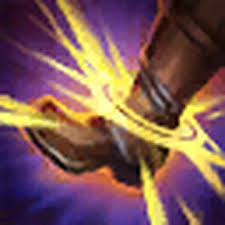
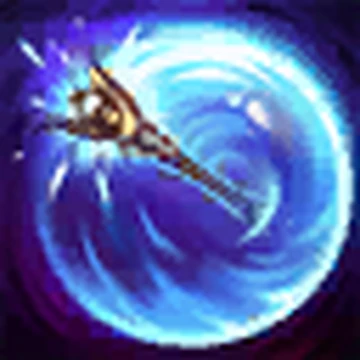
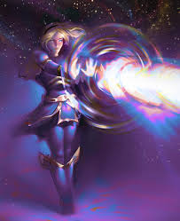

Lux ✨

Who is Lux?
Lux is a bright and powerful mage from Demacia in League of Legends, known for her light-based magic and cheerful personality.
Lore
Born in the noble Crownguard family, Lux grew up in Demacia, a kingdom that fears magic. Despite this, she secretly discovered she possessed powerful light abilities.
Forced to hide her powers, Lux struggles between loyalty to her kingdom and her identity as a mage. She hopes one day to be accepted for who she is.
🎮 Gameplay
Lux Highlights ✨
Support Lux Plays 💡
Personality
Lux is cheerful, optimistic, and kind-hearted. She believes in hope and tries to bring light even in dark situations.
Abilities
-

Light Binding: Sends a sphere of light that binds enemies. -

Prismatic Barrier: Throws her wand to shield allies. -
Lucent Singularity: Creates a slow light zone that explodes.
-

Final Spark: Fires a massive laser across the map.